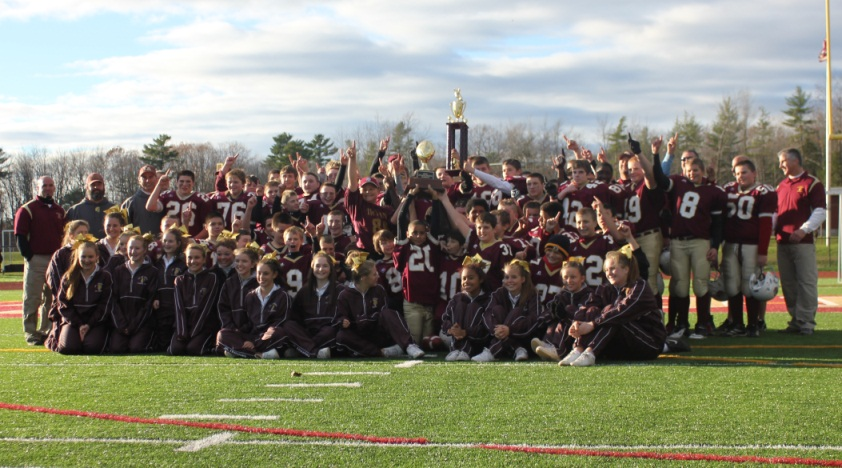

When I started lacrosse I wasn't the best and I started a bit late in my childhood. I was in 8th grade when I first started and I knew I loved it from the moment I stepped onto the practice field all suited up and ready to go. It was a little up and down my first few years playing. My freshman year of high school we were a very god team and my older brother was the captain. He played defense and I played offense at attack. I didn't play at all that year but I learned a lot about the game and I built bonds with my teammates that will never be broken. We lost that year in the western maine finals by a last second goal by south portland high school. My sophomore year was pretty similar except I did play throughout the year and had around 10 goals. The ending of that season was similar to the year before because we lost to south portland again but in a blowout loss this time around. My junior season was my first year starting as an attackman but it did not really go well because nobody on the team took a big leadership role and we all suffered from that by losing in the first round of the playoffs to yet again south portland. My senior season was by far my favorite year. We were all really good friends and nobody really had any problems with each other. After the first five games we had played we noticed we were really good because we could score on anyone with how good our offense was. At the end of the year we set the record for most goals in a single season by a TA boys lacrosse team. It wasn't just the team that did very well with scoring as a matter of fact me and one of my teammates Noah both had over 50 goals in my last season with the program. My last season had one accomplishment that all the others didn't have, beating south portland in a playoff game. I had 6 goals in that game and we handled them very well. The season ultimately ended the same though ending in the southern maine finals against scarborough in a loss.

I started playing football when I was in second grade. I was always one of the better players and my team would always be one of the best in the program for my age group. I only played until my 8th grade season because I knew I wasn't going to grow much more and I never liked my high schools football coach. My last season was the best that the Saco Junior Trojans had ever had. We won the southern maine youth football programs championship. We were the first team from saco to win, we were not the only team to make it to the championship but we were the only team to get out with a W. My basketball career was quite similar only I started in 4th grade and I ultimately finished after My freshman season. The middle school teams that I was on were some of the best years of my life because of how much fun we had playing the game. It helped that we were good and lost only once in 2 years. Once high school came around it seemed to be a more serious game and I didn't really like that. My freshman season wasn't exactly the same considering we lost one of our best players to a rivaling school. We pushed through for that year and made it work by finishing the season at 10 and 8 but we were never the same one we got broken apart.